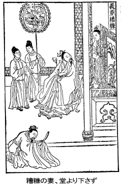

第三巻
一 後漢時代（西暦二五～二二〇年）
内政の安定に専心
［
昆陽の戦い――
王莽の主力潰滅す］
世祖
光武皇帝は名を
秀といい、
字を
文叔といった。
長沙（湖南省）の
定王
発の子孫である。漢の
景帝が
発を生み、
発が
舂陵節侯の
買を生んだ。
買からのち二、三代は相ついで
舂陵侯となったが三代目に封地替えとなって
南陽（河南省）の
白水郷に移って、これを
舂陵と呼び、一族みなそこに移り住んだ。
買の末子
外が
回を生み、
回がのちの
南頓（河南省）の
令（県令）
欽を生んだ。
欽が
南頓で
秀を生んだのである。
このとき一本の茎から九本の穂がついた吉兆の稲が生じた。ゆえに名を
秀とつけたのである（稲の花を穂といい、また
秀という）。これよりさき
望気者（雲気を見て吉凶禍福を占う人）が、
舂陵を望んで曰く「盛んなる雲気である。瑞雲がむくむくと立ちこもっているわい」と。
以前、
王莽が
銭のことを
貨泉と改めたが、当時の人は、泉の字を上下に分けて「白水」とし、貨の字を人べんと真の字に分けて「真人」とし、
銭のことを「白水真人」といった（真人は神人に通じ昔から天子をさす）。のち、果たして南陽の
白水郷から
劉秀が出て天子となったのである。
秀は
隆（鼻）がすぐれて高く、額の中央の骨が日輪のように隆起している相があった。
尚書（五経の一つ）を人から学んだところ、たちまちにして大意を悟った。
あるとき
蔡少公という人の家の前を通ったとき、立ち寄ったところ、
少公は
図讖（図は未来をはかること、
讖は未来を定めること、すなわち未来記、おみくじのようなもの）を学んでおり、
秀をみて「
劉秀はのちに天子になるであろう」と言った。すると居合わせた客が「それは
国師公の
劉秀のことか」（漢の
劉向の子の
※〔「音へん」に「欠」〕がのち名を改めて
秀とした。
王莽の臣）と聞いた。
秀はその人をからかって曰く「貴公はいかなる理由で
僕（士人や庶民が自分のことを卑下して僕といった）が天子になれないというのか」と。
新市、
平林の兵が起こる（一七）や、南陽一帯も騒然としだした。
宛（河南省の県）の人
李通は
秀を迎えて兵を挙げた。
秀の兄の
※（「糸へん」に「寅」）、
字は
伯升は、その気質非常に激しく、大節を有し、常に漢の社稷（国家）を再興しようと憤懣やる方なかった。それで平素は家の生業も手伝わず、財産を投げ出し、粉骨して天下の英雄俊豪と交際していたが、ここに至り親交ある食客を四方の県に送りこんで兵を徴発させた。また
※自身も
舂陵の子弟に呼びかけた。しかしみな恐れ逃げかくれ「
伯升の部下になったらきっと負けて殺されるぞ」と言った。
ところが
秀が
絳衣大冠（赤い将軍の服とその冠）を着て現われたのをみて驚いて「
劉秀殿のようなあんな温厚で謹厳なかたまで出征なさるのか」といった。そしてみな安心した。
伯升は賓客をそれぞれ手分けして、各地に駐屯している諸将を（
劉※軍に投ずるよう）説得させた。その結果、
新市、
平林、
下江の兵団はぞくぞく集まってきて、その数があまりに多いため、統率者を誰にしてよいかわからなかった。そこで諸将は（漢の皇室の血統をひく）
劉氏をたてて天子とし、衆望に添うがよろしいといい、
下江の将
王常は
※を立てようとしたが、
新市、
平林の諸将は
※の威明をおそれ（決断力があり、頭脳明晰すぎてこわいという）、ついに
更始を立て、
※を大司徒とし、
秀を将軍としたのである。
将軍
劉秀は、
昆陽、
定陵、
※（「堰」のつくりに「おおざと」）の各地を説得して、みな配下にした。
王莽は
王邑、
王尋ら大将に命じ、大軍を発して山東地方を平定させようとした。まず巨人（長身）の
巨無覇を
塁尉とし、また虎や豹や犀や象などの猛獣をかりたてて兵勢をたすけさせた。その兵百万と号し、軍の
旌旗はへんぽんと千里も続いた。
〔
巨無覇は身長一丈、腰の太さ十抱え、小車にはのることができず、三馬も耐えることができず、寝るには太鼓を枕とし、食するときは鉄箸を用いるという巨人。塁を守備する将校に任じた〕
漢軍の諸将は敵軍の優勢ぶりをみて、みな
昆陽城に逃げこんで、そのまま解散しようとした。
劉秀は
※、
定陵にいき、諸屯所の兵を総動員してみずから歩騎兵千余人を率いて先鋒となり、勇躍発進した。
王莽の将
王邑、
王尋は数千の兵をだして
秀に応戦させたが、
秀はこれを苦もなく破り、敵の首を斬ること数十級に及んだ。
〔敵の首のことを級首というのは、秦の時代、敵首一つに対して爵級を賞として賜わったので、これが首の代名詞となったのである〕
漢軍の諸将は驚いて「
劉秀将軍は平素小人数の敵をみてもおびえるのに、いま大敵にあって勇敢に戦った。まことに奇怪なことである」と言った。
王邑、
王尋の兵はおそれをなして退却した。漢の諸部隊はこれに乗じて攻撃し、連戦連勝して、ついにひた押しにおし進み、漢軍の一人は敵の百人に当たらぬ者はないという勢いであった。
劉秀はここで敢死者三千人（決死隊）を率いて敵の中堅（陣営中のもっとも堅固な陣。すべて戦場では中軍将軍が上位で、本陣にいる）を衝いたので、
王邑、
王尋の陣は非常な混乱におちいった。漢軍は切先鋭く切りまくり、敵陣を崩し、ついに
昆陽城下で敵将
王尋を討ちとった。
昆陽城の守備軍もこれに勢いを得て、城内から太鼓を打ちならしワイワイと打って出て、内外勢いを合わせて奮戦し、その喊声は天地を震わすほどであった。
かくて
王莽の軍は総崩れとなり、逃走する兵は重なりあって倒れ、潰し、ふみつけ、その死体は百里も続いた。折りから大暴風が雷雨をともなって襲来し、屋根瓦は吹きとび、雨勢のすさまじさは盆をくつがえしたようであった。虎も豹もみな四肢を震わせておののき立ちすくみ、何の役にも立たなかった。このため
※川（※は「さんずい」に「蚩」）に溺れて死んだものは何万という数であった。
王莽軍の大敗を聞いた
関中（
王莽の都した長安の地）は震えあがっておそれた。天下の豪傑はみな漢に呼応して立ち上がり、
王莽の牧守（地方長官）を殺してみずから将軍と称し、
王莽の年号をやめて漢の年号を用いるに至ったが、僅か一か月ほどの間に、天下はみな漢に服従した（このとき漢の年号は
更始元年）。
［
※禹策に杖つき天子に謁す――苦戦ののち河北を平定］
劉※、
劉秀兄弟の威名は日に日に高くなってきたので（
新市、
平林の諸将はおだやかならず、ひそかに
謀って）
更始が
※を殺してしまった。
劉秀は（
父城に陣していたが、急をきいて帰り、深く兄の罪を
更始に詫び）兄のため特に喪に服することもせず、平常通り飲食談笑した。ただ
劉秀の枕には、夜な夜な兄を思って泣く涙でよごれた跡があった。
更始はこの話を聞いて心に恥ずるところがあり、
秀を大将軍とし、
武信侯に封じた。さらにいくばくもなくして大司馬に任じ、軍事上の全権を握らせ、河北地方を攻略させた。
劉秀は進軍するさきざきで、
王莽の苛酷な法令を除いていった。
南陽の人で
※禹という者があった。
策（馬のむち）を杖にして
秀のあとを追い、ついに
※（河南省。※は「業」に「おおざと」）で追いついた。
秀は「私はいま
封拝（侯を封じ将を任命すること）をみずから行うことができる。貴公がはるばる私を追ってきたのは私に仕え、何ぞ官職がほしいのではないか」と聞いた。
禹曰く「いやいやそれは願うところではありません。ただ願わしきことは、
明公の威徳がさらに四海万民にいきわたり、小生も尺寸（少しばかり）の功を立てて、名を
竹帛に残したく思うのみです。
更始は凡人で、帝王の仕事は大業です。
更始ごときはその任でありません。明公、今こそ天下の英雄を手なづけ、つとめて
民の心にかなうようにし、高祖の事業を復活し、万民の命を救っておやりになれば、天下の平定はいと易いことです」と（天下平定の大策を授けた）。
秀は非常に喜んで、
※禹を常に自分の幕中に宿泊させ、ともに天下平定の計を議した。
〔
竹帛――紙のない時代は竹または
帛（きぬ）に文字を書いた。したがって竹帛に功名を垂る、というのは記録に残すこと、すなわち歴史に残すこと〕
邯鄲の易者
王郎という者が、自分は
成帝の子の
子輿だと
詐って
邯鄲城に入り、帝と称して
幽州、
冀州の帰服をすすめたので、州郡がこれに応じた。
〔
王莽のとき長安にみずから
成帝の子、
子輿であると名乗る者があった。
王莽はこれを捕えて殺したが、北方
邯鄲の易者の王という者が、殺されたのは他人の子で、自分こそ真の
成帝の子であると言ったのである〕
当時、
秀は北方
薊城の攻略のため遠征していたが、
上谷の太守
耿況の子、
耿※（※は「弄」の「王」に代えて「合」）が馳せ参じ、
盧奴に陣していた
秀に謁見した。
〔
耿※は、父太守の命で長安にいこうとして、部下を率いて城を出たが、途中
子輿の噂を聞いて、その従者たちが
王郎に従うよう勧めた。
耿※は剣の柄に手をかけて、貴公らは天下を知らぬものなり、
王郎は
弊賊にして取るに足らん、と一人馬を馳せて
秀の軍に入ったのである〕
秀は「君は北道の主人公だ（北伐行のよき案内者である）」と言って大いに喜んだ。しかし
薊城の人々は
秀に従わず、
王郎側についた。（
秀は身の危険を感じて）すぐ城を出ると、夜となく昼となく南に駆けくだった。
蕪※亭（※は「くさかんむり」に「婁」）という駅（馬の立て場）までくると、
馮異というものが
秀を迎えて、暖かい
豆粥を煮てくれた。しかし
饒陽県に入るころは、いよいよ食い物が何もなくなった。
下曲陽（直隷省）につくと「もう
王郎の兵が後ろに迫ってきました」という報告を聞いて、
秀の軍は急ぎ
※沱河（※は「さんずい」に、「虔」の「文」に代えて「乎」）にさしかかった（この河が氷結していればすぐ渡れるのである）。しかし斥候が探察し戻ってきて
「河の水は流れています。船がないと渡れません」という。
秀は従者
王覇にもう一度河の状態をみさせた。
王覇は氷がとけているといって、みなの士気を失わせることをおそれ、河から帰るといつわって「氷は堅くて十分渡れます」と報告した。
秀は河にさしかかった（天運さいわいして）河は凍結していたので、全軍勇んで渡ったが、あと五、六騎というとき氷はとけてしまった（残った兵は
王郎の軍を迎えて討ち死の覚悟をした）
秀の軍は
南宮（直隷省
冀州）まで逃げのびてきたが、ここで大風雨にあい、路傍の空き家に入って雨宿りした。
馮異が薪を抱えてくると、
※禹がこれを燃やした。
秀はかまどに向かって濡れた衣をかわかした。
馮異がまた麦飯をたいてすすめた。
下博城（信都のちかく）の西方にきたころ、一行は道に迷ってあわて、どちらにいけばよいかわからなくなってしまった。するとそこへ白衣の老人が現われ、指し示して「努力せよ、信都の太守
任光は、長安のために城を守っている。ここから僅か八十里だ」と教えた（このとき
更始は長安にいた。長安のためというのは漢のためという意）。そこで
秀はさらに馬を馳せて信都（
冀州城の所在地）に赴いた。
時に
冀州、
幽州一帯の郡県は、すでに
王郎に
降ったが、ただ信都の太守
任光と、
和戎郡の太守の
※※（前の※は「丕」に「おおざと」、後の※は「月へん」に「彡」）のみが
王郎に降ることを承知しなかった。そこへ
秀の軍がこちらへくる、と聞いて
任光は非常に喜んで、城を出て出迎えた。
※※もまたやってきて合した。そこで近県より兵を徴発し、精兵四千を得、檄をとばして
邯鄲の
王郎を討伐した。さきに
王郎に服した郡県も再び帰服した。
秀はさらに兵を率いて
広阿城（
鉅鹿）を占領した。
［赤心を推して人の腹中に置く――
劉秀の即位］
ある日、
秀は
輿地の図（地図のこと、古代より天地
覆戴の徳といって、地を
輿といい、天を
蓋といった）をひらいて
※禹に示して曰く「天下の郡県はこんなに広いのに、今はじめてその一を得たばかりだ、貴公は以前わしに《何んぞ定むるに足らん》と言ったが一向に実現しないではないか」と。
禹曰く「
今日、四海は麻のごとく乱れていて、明君の出現を望む心は、嬰児が慈母を慕うと同じです。昔から明君賢帝が世にでた理由は、みな徳の厚薄にあるのでして、土地の大小にあるのではありません」と言って、領土のとれないことを嘆かず、仁徳を施すよう諌めた。
耿※は、
上谷、
漁陽の兵をもって、進軍しながら多くの郡県を平定し、ついに
広阿で
秀と合流し、進んで
邯鄲を攻めとり、
王郎を斬った。このとき各地の
吏民が
王郎と取りかわしていた文書数千通を手に入れたが、
秀は諸将を集めて、目の前でこれを焼いて曰く「
王郎と通じて謀叛した者はこれで安心するだろう」と。
秀が吏卒の部署をきめようとしたとき、みな願わくば
大樹将軍の部下になりたいと希望した。
大樹将軍とは
馮異のあだ名である。
馮異は人柄温厚、謙譲で、決して自分の功名手柄を誇らず、他の将たちが互いに功を論じあっているとき、いつも
異は大樹のかげに退いて知らん顔をしていた。それで「
大樹将軍」と呼ばれるようになったのである。
更始は
秀の功績を賞し、使者を遣わして
秀を
蕭王（
沛郡
蕭県）に封ずる旨を伝達し、戦いをやめて帰るよう命じた。
耿※は
秀を説得し、河北地方がまだ平定していないことを口実に、
更始の任命を辞し、
徴に応じないように（
更始は天下万民の心を安んずる能力はない、ここで
更始と離れて四海を平定し天下を統一し、天子の位につくのが閣下の事業である）と説いた（
秀は
耿※の言に従った）。
その後、
蕭王
秀は
銅馬等の諸賊を討伐し、これを破ってことごとく降伏させた。しかし諸将は降伏した者の心を疑い、降伏した者も不安の念を抱いていた。
蕭王は
降った者を許してそれぞれの陣営に帰し、部下の兵をとりまとめさせ、軽騎（武装しない）に乗り、諸部隊を視察した。降伏した者たちは、互いに語りあって曰く「
劉秀閣下は赤心を推して人の腹中に置いておいでになる（真心をもって人と接し、何らわれらを疑うところがない）。どうしてこの王のために命を捧げずにいられようか」と。そこで
蕭王は降伏した者たちをことごとく諸将の部下に分配し、南の方、
河内まで攻略した。
赤眉の賊が西の長安を攻めた（二五）。
蕭王は将軍
※禹らの兵を派遣して、
函谷関から西方に進入させて長安を救った。
※禹は王に
寇恂を推薦し「
恂は文武両道を備えて、
民を治め衆を統御する才をもっております」と言った。そこで王は
河内地方を
恂に守らせ、みずから兵を率いて、燕、趙を攻略し、
尤来、
大槍等の諸賊を攻めてことごとくこれを破った。
王が引き返して
中山府（河北）に至ると、諸将が天子の尊号をたてまつった。が王は許さなかった。その後、王が
冀州南平棘に至ったとき、また強く天子になるよう要請した。しかし許さなかった。そこで
寇恂は諌めて言った。
「われわれ将士が親兄弟を捨て、故郷をはなれて大王に従い、
矢石の間（戦場）に身をさらして敢闘するのは、
龍鱗をよじのぼる魚のごとく、
鳳翼に付く鳥のごとく、王の天下統一の大業をたすけたいためであります（龍と鳳は古来天子の象徴であるからこの言を用う）いま王が好機を抑えてなお衆の期待に逆らえば、将士は絶望的になり、計画を失って、故郷へ帰りたいと思うようになるでしょう。この大衆が一旦散り散りになりましたなら、再びこれを結集することは至難のことです」
馮異もまた「衆議に従って天子の位におつきになるのがよろしいでしょう」と言葉を添えた。このとき
儒生の
強華という者が、
関中から
赤伏符をもってきた（符はみくじ、予言の意、赤は火、伏は蔵するの意、赤伏はみくじの名、したがって
火徳の天子を予言した書）。これには「
劉秀兵を発して不道の賊を捕う。四夷雲集して龍野に闘う。四七の
際、
火を
主となす」とあった。
〔四夷雲集――天下の豪傑互いに覇を争い、龍が野に戦うごとしの意である。四七の際――四七の二十八の
卦は
火徳を主君となすべしというのであって、
劉秀を指す。
劉秀は二十八歳で兵を起こし、いま二十八将を得、高祖より光武の挙兵の年までが二百二十八年となり、すべて四七の二十八に当たるから、四七の
際であり、
劉氏は
火徳の天子であるから、当然
劉秀が天子となる天命をもっているというのである〕
群臣はこの
讖によって、再び天子の位につくことを要請したので、
秀は
※南（直隷省、
※県の南方。※は「高」に「おおざと」）で皇帝の位につき、年号を
建武と改めた（西暦二五年、これを後漢の始祖光武皇帝という。のち洛陽に都を定めた）
［
東隅に失い
桑楡に収む――
馮異・
※禹、
関中を平定］
赤眉の賊
樊崇らは、漢の一族の
劉盆子（斉王
肥の後裔、
城陽王
萠の子）という者を立てて帝とした。
盆子はこのとき軍中で羊飼いをしていた（一説には牛飼いという）十五歳の少年であった。髪も結わず、履物もはかず、ぼろ服をまとい赤ら顔を汗で汚した姿であったが、みなから帝に推され、群臣が自分を拝するのをみて恐れおののき、泣きだしそうであった。
赤眉の賊が長安に攻めこむと
更始は（到底防ぎ得ないと観念し、単騎で）
高陵に逃げた。光武帝は
詔を下して、
更始を
淮陽王に封じた。
宛人の
卓茂は以前
密県（河南省）の県令をしていたが、善政を布いて教化大いに現われ、道に物が落ちていても、誰も拾わないほどの惇風美俗の地方であった（その後、病で
王莽により罷免されていた）。光武帝は即位すると真っ先に
卓茂の居所をさがさせて訪ね、
太傅として遇し、
褒徳侯に封じた。
〔
太傅は三公の右に坐し、首席
上公である。
卓茂はこのとき齢七十余であった〕
建武元年（二五）十月、光武帝は
洛陽に車駕の行列を進め（
南宮に入り）ここを都と定めた。
このころ
関中はまだ平定していなかったので、
※禹将軍が大軍を率いて西征した。その軍勢は百万と称された。
禹はゆく先々で車をとめ、漢の
節旗（皇帝から賜わる将軍のしるし）を押したてて、百姓を招いて慰労した。その地の
垂髫（髪をたらした子供）
戴白（白髪の長老たち）はみな
禹の車の側に集まってきて喜び、
禹の名声は
関西に響きわたった。
禹は
※邑（
扶風郡。※は「木へん」に「旬」）でしばらく休養し、ここに留まった。（偵察によると
赤眉の軍は長安を占領し、
新がたくわえた兵糧が豊富にあるので、
赤眉の疲れを待つためにとどまったのである。やがて城中の兵糧を食いつくすと）
赤眉は大掠奪を行って長安を引きあげた、
禹の軍は長安に入った。すると
赤眉もまた長安に入り、長安争奪戦となったが、
※禹は敗れて長安から退却した。
光武帝は
禹に、兵をまとめて
洛陽に帰るよう命じ、
馮異に
関中攻略を命じた。しかし
※禹は戦功のないことを恥じて洛陽に帰ろうとせず、
馮異を迎えて強引にこれと合体して、ともに
赤眉を攻めた。漢軍は
回渓で大いに戦ったが敗れた。そこで散り散りになった兵をまとめて砦を築き、堅くこれを守った。やがて
赤眉を
※山（※は「山へん」に「肴）の麓で大いに破った。
光武帝は
御璽の賞状（天子の印のある書）を
馮異に賜わって曰く、
「初め
翅を
回渓に垂れしといえども、
終にはよく
翼を
※池（※は「さんずい」に黽）に奮った。これは
東隅に失って
桑楡に収めたというべきである」と。
〔
東隅は日の出るところ、すなわち朝。
桑楡は日没を表現した古語で晩のこと。また
回渓における敗戦を鳥の翼が
萎れたようにたとえている。つづめて言えば、戦功を朝に失って夕ベに収めたのはめでたいことである、というもので、それをやや文学的に表現している〕
赤眉の残党（十万余人）が、東方の
宜陽（河南省）に向かったので、光武帝はみずから将となり、合戦の用意をして待った。ところが
赤眉の
樊崇は、天子にした
劉盆子、
丞相の
徐宣らを引きつれ、
肉袒（右肩をぬいだ受刑の姿）をして降伏してきた。光武帝は軍馬をならべて
赤眉の君臣に見せ「
卿らは降伏したことを悔いることはないか（一戦まじえるなら相手をつかまつる）」と聞いた。
丞相徐宣は平身
叩頭して曰く「私どもは虎口をのがれて慈母のふところに帰する思いで降伏したのです。これはまことに歓喜のきわみ、少しもお恨みするところはありません」と。
光武帝は「
卿はいわゆる鉄中の
錚々（鉄の中でも音のよいやや質の剛なるもの）
庸中の
佼々なるものよ（凡庸ではあるがやや見所のある人物よ）」といって、降人一同に洛陽の田園邸宅を賜わった。（なお
盆子は皇帝の叔父趙王の近侍として仕えさせた）
雎陽（河南省）の人
慶吾は
劉永を斬って帝に降った。
劉永は
更始の時代、自称梁王となったが、
更始が滅んだので、みずから帝を名乗っていた。しかしこれもここに敗北して死んだ。
［
馮異、面目をほどこす――
豆粥に珍宝
銭帛の報い］
漁陽郡の太守
彭寵の下男が、
寵を斬って降伏してきた。以前、光武帝が
王郎を討伐していたときのこと、
彭寵はすさまじく勢いのいい騎兵をくりだして兵糧を運搬し、
劉秀が敵のため糧道を断たれることのないように尽くした。
寵はその功績をひどく自負して、心中望みが高く（光武帝の報酬が意に添わなくて）満足できなかった。
幽州の長官の
朱浮は、
彭寵に書翰を送って曰く「遼東の豚が子を産んだ。その子豚の頭は真白で、非常に珍しいとて、天子に献上しようとして、豚をひいて京に上った。その途中、群豚に出会ったが、それがみな白い頭をしていた（これでは希少価値はない、といってその男は家へ帰った）。君の軍功もこれを朝廷で評議したならば、遼東の豚と同様の結果となるだろう」と。（
寵は愚かにも
朱浮のこの手紙で腹を立て、兵を出して
朱浮を攻めようとした）。
このとき光武帝が
寵を召したので、
寵は誅殺されるのではないかと疑い、謀叛を起こしたが、ここに敗れたのである。
劉永の立てた斉王
張歩が降伏した。光武帝はさきに
張歩を
東莱（山東省）の太守に任命したが、その前に
劉永の命令をうけて斉王になってしまったのである。将軍
耿※はたびたび
張歩と戦って大いに破り、祝阿（しゅくあ）、
斉南、
臨※（いずれも山東省。※は「くさかんむり」に「輜」のつくり）の諸城を占領した。光武帝は
臨※に車駕を進めて兵をねぎらい、
耿に曰く「将軍はいぜん
南陽にいたころ、斉の地を取ろうという大策を建言してくれたが、あの当時は落々として話が合わなかった（話が大きすぎて、気持ちにしっくりこなかった）のだが、志を固く持つ者は必ず成功するものだね」と。
かくて
張歩が敗れて斉の地はことごとく平定した。
将軍
呉漢らは、
劉永のたてた
海西王
董憲や叛将
※萠（※は「まだれ」に「龍」）らを攻めて斬った。これで
江淮地方と山東地方はまったく平定した。まだ降伏しないのは
隗囂と
公孫述だけとなったが、光武帝は多年戦場で苦労した人なので、諸将に向かって「
隗囂と
公孫述はまだ
降らないが、この二人は度外としよう」と言った。
〔度外は勘定外ということ。光武帝は苦労人であるから、ながく兵士を戦場におくに忍びず、早く家に帰って休養させたかったのである。そこで
公孫述に、懇切な手紙を出したが何の返事もなかった〕
馮異将軍が長安から京師へ帰ってきた。
〔
馮異は
関中を定め治めること三年、長安の
民はよくなつき「
咸陽王」と呼んだ。
異に天下をとる野心があると讒言した者があったので、光武帝がその上書を長安に送ると、
異は恐縮して他意ないことを上書してきた。これに対して光武帝は、義は君臣、情は父子、何の恐れることやあらん、と情理をつくした親書を送り、
馮異に一度上洛するよう召したので、このたびの帰京となったのである〕
光武帝は
公卿大臣に対し、
馮異についてこう紹介した「この将軍はわしが兵を挙げたとき
主簿の任を果たした人である。わしがために
棘の道を開き、
関中を平定した恩人である」と。また帝は
詔して
異の労をねぎらって曰く「騒乱のさい（
薊城を逃げだして南方に走ったときのこと）とりあえず
蕪※亭（※は「くさかんむり」に「婁」）にて
豆粥をととのえ、
※沱河（※は「さんずい」に、「虔」の「文」に代えて「乎」）で麦飯をつくり、わしの飢えを救ってくれた厚意に、わしは久しく報いていない」（という詔書に添えて、多くの珍宝
銭帛が下賜された。
異は面目をほどこして、十日ほど京師にとどまり、再び妻子を引きつれて長安へ帰った）B
建武八年（三二）、光武帝はみずから軍を率い
隴右の
隗囂を討伐した。折りから
頴川郡（河南省開封府）に賊が蜂起していた。帝は引き返し、
執金吾（官名で九
卿待遇）の
寇恂に曰く「
頴川は京師に接近した重要な地である。
卿でなくては平定できない。が九
卿から出て郡守などという地方官になってもよかろうか」と。（
恂は、
頴川の群盗は陛下の遠征と聞けば、必ずみな降伏するでありましょうと）帝に勧めて親征させた。果たして賊はことごとく降った。
恂はついに郡の長官となる辞令を受けなかった。百姓らは道をさえぎり帝の
駕を止めて「どうぞ
寇恂様を一年だけお貸しください」と帝に願った。そこで
恂をとどめて
頴川を治めさせることにした。かくて大軍は戦わずして凱旋したのである（
恂は依然、
頴川の太守として善政を施した）
［
虜、わが眼中にあり――
隴を得て
蜀を望む］
建武九年、
隗囂が死んだ。
囂は
更始元年から兵を起こし、建武の初めに至るまで
天水郡により、みずから西州の
上将軍と称した。その後あるとき、
馬援を蜀の都
成都にやり、
公孫述の人物を観察させた。
援は
公孫述とは古くからの知りあいであったので、
援は心ひそかに、きっと
公孫述は自分の手を握り、昔のように喜んでくれるだろうと期待して行った。
馬援を迎える
公孫述は、帝と自称してから四年もたっているので、
援が行くと、
殿の階段下の左右にものものしい護衛の兵を並べて
援を引見した。
援は随員らに向かって「天下には英雄が数多くいる。その雌雄もいまだ定まらないのに、
公孫述は
哺を吐いて国士を迎える礼も知らず（客を迎えるときの謙譲の徳の一つとして、
哺を吐くという言葉を使う）かえって無用な外観のみ修飾するは、
木偶のごとしだ。こんなことでどうして天下の名士を長くとどめ得ようか」と言って、早々に帰ってしまった。
帰って
囂に報告して曰く「
子陽（
述の
字）は井の中の
蛙です。むやみと自分を尊大にみせているのみです。（あんな奴を相手にせず）心を洛陽の方にむけた方がよろしいでしょう」と。
囂は
援に書をもたせて洛陽に行かせ、光武帝に奉呈させた。
援は初めて洛陽に行き、
宮門にしばらく待つほどに、中に招じいれられた。光武帝は
宣徳殿の
廡下（御殿の回廊の下）にあって、
岸※（冠もつけず額をあらわし頭巾で頭髪を覆った姿。※は「巾へん」に「責」）した顔に笑みをたたえ、
援を迎えて曰く「
卿は
隗囂、
公孫述二帝（二人の偉い人）の間を遊客として往来していると聞いたが（君主を定めず遊び歩くは恥ずべきこととわしは思っていた）いま
卿と会ってみて、むしろ人を恥じいらせるような堂々たるお方だとお見うけした」と。
援頓首して「当今は、君主が臣をえらぶばかりでなく、
臣もまた
君をえらび奉るものです。臣はもと
公孫述と同県の者で、幼少のころから親しくしていた間柄ですが、さきごろ蜀にまいりますと、
述は階段下の左右に衛兵を仰々しく整列させて私に面会しました。しかし今、面識もない
臣が遠くから来たのに、陛下はどうして私が刺客や姦人でないことを見抜いて、かくも手軽にお会い下さるのですか」と申し上げた。光武帝笑って曰く
「君は刺客でなく
説客だ」と。
援曰く「天下の状態は
背叛常なく、帝王の称号を盗むもの数えきれぬほどあります（しかし臣はいまだかつて一人の畏るべき帝を見たことがありません）。いま陛下をみるに、
恢廓大度（太っ腹）、高祖と
割符を合わせたごとく似ておいでになります。そこで臣は、帝王というものには、自然に備わった真徳のあることを知り得ました」と。
馬援が帰ると、
隗囂は「東方の様子はどうであったか」と聞いた。
援答えて曰く「光武帝は才智聡明にして武勇あり、さらに謀略に優れておりまして、とうてい世の人の敵すべきところではありません。そのうえ胸襟を開いて誠意を表わし、少しも包みかくすところがなく、気宇広大で大節をもつところ強く、だいたいこういうところは高祖皇帝と似ております。また経学に通じ、博く群書をみており、政事に精通し、弁舌さわやかで、まず皇帝としては前世に比較すべき人はありますまい」と。
囂曰く「
卿は光武帝をしきりに称揚するが、それなら高祖より優れているというのか」と。
援曰く「高祖は、われら是非の批評を加える余地のない方です。しかしながら
今上は吏事政務を好んで、一挙一動、法にかなわぬところはありません。酒も好まずはなはだ謹厳です」と。
これを聞いて
隗囂は心中面白くなく、
援に曰く「卿のいうところを聞いていると、むしろ光武帝の方が高祖よりまさっているではないか」と。
やがて
囂は長子の
恂を入朝させて（人質として送り）光武帝の
侍郎とした（このとき
馬援も
恂の随員として入洛した）。しかし
囂はその後いくばくもなくして叛いた。
囂はまたかつて
班彪という学者に、戦国従横の説（
合従連衡の理論）を問うたことがある（これは
囂が蜀の
公孫述と合同して漢にあたろうという野心があったからである）。
班彪は王命論という長文の書をもって
囂の考えに異見したが、
囂はこれを聴かなかった。（
班彪は「
漢書」の著者
班固の父）。
〔王命論――天子は天の命ずるところ、人力のいかんともなしがたきものであることを述べた書〕
馬援が光武帝の
行在所へきて謁見を求めた（
隗囂が光武帝にそむいたので、帝は洛陽を出て西に向かっていた）。帝は再び
援に、
隗囂を説得して帰順するようすすめさせ、帝みずからも
囂に懇切な書翰を賜わった。しかし
囂はこれもきかないで、ついに
公孫述につき、その臣と称した。
述は喜んで
囂を
朔寧王に封じた。光武帝はことここに至って、
囂を討伐することとなったのである。そのとき
馬援は帝の前に出て、米を集めて山や谷をつくり、土地の形勢を指摘し、大軍の進むべき道筋を示した。帝は「もはや
虜（
囂を指す）はわが眼中にあり」と手を打って喜んだ。
かくて漢軍が進攻すると、
囂は
西城（益州の県名）にのがれ、病いと飢えにせめられて、
恚憤（怒り悶え）して死んだ。
囂の子
純も降伏し、
隴右はことごとく平定した。
建武十二年、
公孫述が滅んだ。
述は
茂陵（陝西省西安）の人。
更始の時代から蜀を制して帝を称し、国を
成と号した。光武帝はすでに
隴右を平定したが、ある日、みずから嘆いて曰く「人はみずから足るとせざるを苦しむ。すでに
隴を得て、また
蜀を望む」と。
大司馬の
呉漢らを将として（兵六万余、騎五千頭）かねて派遣されていた征南大将軍の
岑彭の部隊と合流して蜀を討伐させた。このとき
彭は
荊門（湖北省）山下で
戦船数十隻を整備し、水上より攻めこむ準備をしていた。
呉漢将軍は、これをやめさせようと思った（理由は、船には
棹師が多く必要で、食糧が非常にいるからである）。しかし
岑彭はきかなかった（それで
呉漢は光武帝に上書して、帝の指示を求めた）帝は
彭に報じて「大司馬は歩兵、騎兵を用いる陸戦にはなれているが、水戦には熟練していない。
荊門からの進軍については、ただ征南公（
岑彭）に一任するからよろしくはからうよう」といってきた。
岑彭は
戦船をつらねて進軍し、向かうところ敵なき有様であった（蜀の兵は大混乱を来たし、溺死する者数千人、
岑彭はさらに進んで
江関に上陸し全軍に命じて、人と物の
虜掠を禁じた。百姓はみな酒や牛を献上したが征南公
岑彭はこれをうけなかった）。
公孫述はこれを見て恐れ、亡命者と偽らせて刺客を送りこみ、夜中に
岑彭を殺させた。
ほどなく
呉漢が陸路を進攻して到着し（
岑彭の軍を麾下にいれ）さらに進撃して
成都に入城し、
公孫述を攻撃してついに殺した。こうして蜀の地はまったく平定したのである。
［天子の明察、万里の外を見る――西域諸国との交流］
涼州（甘粛省）の
牧（長官）の
竇融が、
河西地方の
武威、
張掖、
酒泉、
敦煌、
金城五郡の太守を率いて入朝した。この
融というのは建武の初年から
河西地方に割拠していたが（光武帝の威徳を伝え聞いて入朝したいと思った。しかし遠隔のこととて思うにまかせず、
隗囂に従って建武の
正朔（暦）を受け、光武帝の政治に支配されたいと思ったが、
囂は戦国の群雄の例をひいて
融に自立をすすめた。
融は
河西の英雄を集めて協議したが、誰も
囂の説をよしとしなかった）、書簡を捧げて洛陽に使者を出した。
光武帝はこれを喜んで
融を
涼州の
牧に任じ、
御璽を
捺した書を
融に賜わって曰く、
「世の論者（暗に
隗囂を指す）は、昔、秦の二世皇帝のとき、南海の
任囂が
尉佗に教えて、南海七郡を領有して独立せよと勧めたと同様な計略を
卿に勧めるであろう（われ
卿に
涼州の
牧を授く、よろしくみずから去就をえらばれよ。われ敢てこれを強いるにあらず）」
この書が届くと
融はじめ、
河西の英雄たちはみな驚いて「天子の明察、万里の外を見る」と威服した。
光武帝が
隗囂を討伐したとき、
融は
河西五郡の兵を率いて、漢の大軍と合流して戦った。その後、蜀の
公孫述が平定されると、帝の
詔をうけて入朝し、
冀州の
牧を拝命したのである。
建武十八年、
代王（
代は幽州に属す。河北省）
盧芳が匈奴の地で死んだ。
芳は
安定（延安）の人である。
詐って西漢武帝の曽孫
劉文伯だと称していた（
字は
君期というが、漢家が中絶したため、漢の徳を匈奴に示そうとしてあえて詐称したのである）。建武のはじめごろから
安定により自立した（みずから
西平王と称し、匈奴と親交を結ぼうとした。匈奴の
単于は
劉家を立てて手先に使ったら利益であろうと思った）。匈奴は
盧芳を迎えて漢帝とし、その後、しばしば中国国境の諸郡を侵略した。のち光武帝に降って
代王に封じられたが、また反して匈奴に逃げ、ついに病いで死んだ。
建武二十二年、匈奴が和親をもとめてきたので、光武帝は使い（
李茂）を派遣してこれを許した。
〔匈奴では毎年旱魃、
蝗害が続き、国土のなかばは荒廃し、人畜続々たおれたので、中国に攻略されることを恐れて、和親を申し込んだのである〕
匈奴は
呼韓邪単于が
成帝のとき死んでから（西暦三十年前後）代々漢に入朝して臣事していた。
平帝のとき
王莽が匈奴に対して漢の条例を頒布し「中国には二名（二字の名前）なし」と言って
単于の名も一字名に改めるよう促した（これは
平帝が名
箕子を改めて
※〔※は「街」の「圭」に代えて「干」〕としたので、これから二字名を禁じたのである。ときの
単于は自分の四字名を「知」の一字に改めた）。さらに
王莽は漢の帝位を奪ってから、むかし漢の帝から匈奴の王に賜わった
璽を取り替えて「新匈奴
単于章」とし、漢の臣と同等の扱いをした。
単于はこれらを深く恨んで、しばしば中国国境に侵入した。建武以来も匈奴は
盧芳を助けて漢を侵略し、
烏桓、
鮮卑などという東夷の諸族と兵をつらねて入寇したが、ここに至ってようやく和を請うてきたのである。
西域の諸国が漢の都護職を置いて統率されんことを請うたが許されなかったので、漢にそむいて匈奴についた。これよりさき、西域の
莎車王
賢と
※善王
安（楼蘭の西南。※は「善」に「おおざと」）の二人が、ともに使いを派遣して漢に献上物をした。とくに
賢の使いは二度まで入朝したので、光武帝は
賢に都護の印綬を賜わった（西域諸国の総督を任じた）。すると国境の郡守が「西域統御の大権たる都護の職を（むやみに外人に）与えてはなりません」と言上したので、帝は
詔を下して都護の印綬を返上させ、改めて大将軍の印を賜わった。
賢はこれを恨んで、その後も勝手に大都護と称し、西域三十六国（いまの
新彊地方）がことごとく
賢に従属するにいたった。
このため
賢は傲慢不遜となり、西域諸国を併呑しようとしたので、諸国は恐れ、十八か国の王がすべてその子を漢に送って人質とし、ぜひとも漢の都護を遣わされたいと願った。帝は厚く土産品をもたせてこれらの
侍子（人質）を国に帰した。（光武の考えは、中国はやっと平定したが、北辺はまだ定まらず、西域まで手がひろげられないと思った。この様子をみた
賢は、さらに暴威をふるい）再び都護の設置を願いでたが、帝は再びこれを断わったのである。
建武二十四年、匈奴南部の八地方の（領袖たちが協議して）
日逐王
比を立てて
南単于（南匈奴の皇帝）とし、漢の国境
五原の要塞の門を叩いて
好を請い（我々は漢の
藩塀となり、
北匈奴を抑えましょう）と申し入れた。ここで匈奴は南北に二分したのである（西暦四八年、いまのモンゴル人民共和国、蒙古自治区）
建武二十五年、
貊人、
鮮卑、
烏桓（みな東夷）が入朝した。建武二十六年、
南単于の庭を立てた（庭は王宮のこと、
五原西部の
塞から八十里のところに建てた）。ここに漢の
使匈奴中郎将を派遣し、この地方を総督させた。
南単于の居城は山西省
西河郡
美稷県に移した。
二十七年、
北匈奴が使節をよこして和を求めたが（許さず）、翌年また来て請うたので許した。
［柔よく剛を制すの政道――光武帝の死］
中元二年（五七）光武帝は崩じた。帝が兵を起こしたのは二十八歳、帝位についたのは三十一歳の時であった。
第五倫（
京兆の
尹の官吏で
第五が姓、下級官吏であったから皇帝に謁見することはなかった）は詔書を読むごとに、感嘆して曰く「光武帝はまことの聖天子である。もしひとたび謁見して（私の意見を申し上げたならば）たちどころにご採決くださるにちがいない」と。（その後、
倫は果たして会稽郡の太守に任用された）帝は詔書を手ずから
認めて四方の国々に賜わった。それは一枚の竹簡に十行も細かく書いてある立派な文章であった。
帝は政道を明らかにし、権力、綱領を自分の手で総覧し、時代の大勢をよく洞察して、国力を考慮しつつ（十分斟酌して帝業をすすめたので）一つとしてその事業に過失がなかった。
あるとき故郷の
南陽に行幸し、酒宴を開いて親戚の者たちにふるまった。このとき帝の
伯叔母たち数人が集まって語って曰く「
文叔さん（帝の
字）は、ふだん人とおつきあいするにも、これといって取りつくろうふうもなく、ただ正直で温厚なだけの人だったから、まさか天子様になるとは思わなかったのに、よく出世なさったものだ」と。帝はこれを聞いて笑って曰く「わたしは天下を治めるにもこの
柔の道でいこうと思うよ」と。
光武帝は多年戦場で東奔西走したので、軍事をきらうようになり（将兵の苦しみをみるにしのびず）蜀が平定したのちは、よくよく事変が起こったとか特別の急報でない限り、軍事とか出征とかのことは口にしなかった。
建武二十七年、
北匈奴が（旱魃、
蝗害で）衰弱したのをみて、
臧宮、
馬武らの猛将が上書して「今こそ匈奴を撃ち滅ぼすべきときです（何とぞ我々を征かせてください）」と建白して、剣を鳴らし掌をうって勇みたち、その心はすでに
伊吾城の北にとんでいた、（
伊吾城は国境
敦煌県）。光武帝はこの上書の返事に、
黄石公の
包桑記を引用して曰く「
柔よく
剛に勝ち、
弱よく
強に勝つ」と。それ以後、諸将は一人として戦争を起こそうなどという者はなかった。
〔
黄石公の
包桑記――漢の
張良が橋の上で会い、その後師事した学者を
黄石公といい、その著の一つに「
包桑記」というのがある。これは桑の木のように根本がしっかりしていれば、その枝葉はおのずと繁栄するものである。地を広めることを務めるものは
荒み、徳を広めることを務めるものは強しというような内容で、いま中国に善政を布こうとしているとき、とうてい外征など考えられないとさとしたのである〕
光武帝は
玉門関（
陽関ともいう、敦煌の西の関所）を閉鎖して、西域との交通を遮断した。
武帝以来の功臣については、その晩年の保全をはかり（将軍の印綬を返還させて）再び軍事に従わせず、みな列侯に封じてそれぞれの邸宅に住まわせた。行政上のことは三公（大司馬、大司徒、大司空、のちに太尉、司徒、司空と名称をかえた）に任せて責任をもたせ、功臣らには政事をまかせないようにした。このため諸将は名誉を全うして世を終わったのである。
功臣のなかで
蔡遵がまず卒した（建武九年）。帝は
蔡遵を追慕してやまなかった。
来歙と
岑彭はともに戦死した（建武十一年征蜀の役）。帝はこの二人を深く哀れんだ。
呉漢（二十年）、
賈復（三十年）は帝の在世中に死んだ。
呉漢は戦場にあって、ときに味方が敗れても泰然自若、すこしも動揺しなかった。帝は嘆賞して
「
呉公は実に人の意を強くするたのもしい将軍だった。その威容、その重厚さは一敵国の観があった」と言った。
呉漢の出陣はきわめて迅速で、朝に
詔をうけて、夕ベに出撃しているというふうであった。その臨終のとき光武帝は
呉公の邸に行き、病床に臨んで「いい残すことはないか」と聞いた。
呉漢曰く「臣はなはだ愚かなれど一言......陛下願わくば刑獄を慎重にされて、みだりに大赦なさらぬよう」と（光武帝は
柔の道をもって政治をしているが、受刑の徒はいずれ良民を害しているのであるから、大赦で出獄させて禍いのもとをつくらぬよう諌めたのである）。
賈復は帝が初めて兵を挙げたときから、軍の統督をしていた。帝は「
賈統督は突撃してくる敵の
衝車（戦車）をくじいて千里の外に追いまくる威力がある」と評した。
賈復が戦いで傷をうけたとき、帝は驚いて「わしは以前から
復が敵を軽くみるのを戒めていたが果たして負傷した。ああ、わしは一人の名将を失うか。聞くところによると
復の妻は妊娠しているそうだが、男の子だったらわしの娘を嫁がせよう。女を生んだら、わしの子に
娶ろう」と（光武帝が群臣を愛撫することかくのごときであった）。
ただ
馬援が死んだときだけは、光武帝の恩恵の意が非常にうすかったことは遺憾だった（建武二十五年没。死んでからの讒言により帝は
援を快く思わなかった）
援はかつて「
大丈夫たるもの必ず戦場で果て、その
屍を
馬革に包んで故郷に帰るこそ本望。何とて女子供に看とられて死ねようか」と言ったことがある。
交趾がそむいたとき、
援は
伏波将軍（波を征するの意で爵名、海軍大将相当か）となってこれを平定した。また
武陵の蛮民が叛したとき、
馬援はまた討伐に行きたいと願ったが、帝は
援が高齢なのを憐んで許さなかった。
援は甲冑をつけ、馬にまたがり、鞍によりかかって昂然として帝を顧みて、まだまだお役に立ちますぞというところを示した。帝は笑って「
矍鑠なるかなこの
翁」といい、
援を討伐に派遣した。
これより先、帝の女婿の
梁松（
字は
伯孫、光武帝の娘
舞陰公主と縁組した）が、あるとき
援を訪問して、丁重に床下で拝礼した。しかし
援は
梁松の父（
梁統）と友人であったので（心やすだてに）
松に対して答拝しなかった。それから
松は
援に面白くない思いを抱いた（いやしくも皇帝の婿であるのに、
援は不遜であるというのである）
援が
交趾へおもむいたとき、
援は兄の子に手紙をやって訓戒した（兄の子
馬厳、
馬敦は性軽薄、人をそしることを好んだ）。
「わしは君たちが、人の過ちを聞くことがあっても、自分の口からは言わぬことを欲する。それはちょうど父母の名は耳には聞くが口にいうべからずと同じである。好んで人の長短を論じたり、政治の是非を議するようなことが、わしの子孫にあることを望まないものだ。（ここによい模範を示そう）
龍伯高は人情に厚い謹厳、節倹の仁だ。わしは彼が好きで深く尊敬している。君たちが
龍伯高を見習うことを願う。また
杜季良は豪快義侠の人、人の憂を憂とし、人の楽を楽とする人物（彼を知らぬ人も彼を慕っている）だからその父の葬式のとき、遠近の賓客を招いたが、数郡の人たちがみな会葬した。わたしはこの人も愛し、尊重している。しかし君たちに、必ずしも彼らに
倣えとはいわない。なぜなら、
伯高に見ならって見ならい損ねても、なお慎み深い誠実な人とはなれるだろう。それは
鵠（白鳥）を刻んでできそこなっても、なお
鶩くらいには見えるというようなものだ。しかし
杜季良を見ならって見ならいそこねたら、これは天下の軽薄者となってしまう。それこそ虎を描いて犬に見られるという類だ。よくよく慎んでもらいたい」と。
〔父母の名は耳には云々――中国では古来、目上の人や同輩に対してはその名を呼ぶことは非礼とされており、必ず
字をいうことになっている。
劉秀文叔の場合、天子
秀といってもよいが一般は
秀とは呼ばず、
文叔殿という〕
杜良は
杜保のことである。
杜保に恨みをもつ者が上書して、
馬援が甥に与えた手紙を証拠に訴えた。このため
杜保は職（越騎司馬）を免ぜられた。
梁松も
保と交際があったので、危うく連座するところであった。このため
梁松はいよいよ
援を恨んだのである。その矢先、
馬援の軍が
武陵壷頭山で敗れ、
援は疫病にかかって陣中で死んだ。
梁松は
援に恨みをはらそうと思い、事実無根のことをあげつらって
援を罪に落とし入れた。光武帝はそれを信じて、かつて
援に与えた
新息侯の印綬を取り上げた。
馬援が
交趾に遠征したときのこと、常に
※苡の実（珠数玉、長寿の薬草。※は「くさかんむり」に「意」）を飲み、非常にからだが軽快になり、瘴気（風土病）の予防になったので、
援は
交趾から帰るとき、
※苡を車いっぱい積んできた。
馬援の死後、讒言するものがあって「あの車に積んできたのは（
明珠文犀南方の夜光の真珠、
白縷の
犀角です。
援はこれで私腹をこやしている）」と言ったので、帝はますます
援に対して不信感を強めた。しかし
朱勃（雲陽県の太守）が上書して、
援の無実を痛論したため、帝の心もいくらかなごんだ。
［
糟糠の妻、堂より下さず――良吏賢臣列伝］
光武帝は絶対に
収賄罪を許さなかった。かつて大司徒の
欧陽歙が収賄罪を犯して下獄した（彼は
尚書博士、つまり学者の家に生まれ、
※南郡〔※は「さんずい」に「余」〕の太守となったとき、百姓より賄賂数千万金をうけ、田地のきまりを勝手に裁量した）。これまで子弟に書経の講議をし、その数は千人余に達していたが、先生が捕われたと聞いて、それから
歙の弟子が
宮門につめかけて嘆願した。それでもついに許されず、
歙は獄中で死んだ。
光武帝が重用した群臣は、
宋弘をはじめみな慎重謹厚な人物ばかりであった。帝の姉に
湖陽公主という寡婦があった。公主は
宋弘に好意をもった（
宋弘の威容徳器は群臣におよぶものがないと、弟光武帝に自分の気持ちを打ちあけたが、
宋弘には妻があって、なかなかむずかしい話だと帝は思った）。ある日、
宋弘が参内して帝に謁見したとき、帝は公主を屏風のうしろにかくして会った。
帝曰く「富みては交りを替え、貴くしては妻を
代うという諺があるが、人情とはこのようなものかなあ（富裕の身となれば旧友を捨てて新しい友と遊び、その身高顕となれば旧妻を捨てて新妻を迎える）」と。
宋弘こたえて曰く
「（愚答なれど申しあげます）貧賎の交わりは忘るべからず、
糟糠の妻は堂より下さずと（いかに富裕になろうとも、旧友は尊重すべきもの。また、困窮した時代、油の
糟、米の
糠をたべ、ともに辛苦した妻は、高位高官に昇りましたら、なお大切にして、堂――家――より出すなどということはすべきでないと思います）」と。

帝はひそかに公主をふりかえって「かなわぬことだ」と言った。
あるとき
湖陽公主の家へ
蒼頭（
奴僕は頭に青い布をかぶるので
蒼頭という）が人を殺してかくれていた。捕吏が取り抑えようとしたが、公主が拒んで、犯人を渡さなかった。洛陽の太守
董宣は、公主が外出するときを狙い、当の下僕が外出する公主の車に陪乗して出ていくと、
董宣はこれを叱りつけて車から引きずり降し、
挌殺（なぐり殺し）した。公主はこのことを帝に訴えたので、帝は大いに怒って
宣を呼びつけ、
捶殺（杖でうち殺す）しようとした。
宣は「下僕が人を殺したのをお見のがしになるようでは、どうして天下を治めることができましょうか。臣は陛下の笞を待つまでもなく、ここで自殺させていただきます」といって、
楹（ひさしの柱）に頭をうちつけ、噴きだす血潮で満面
紅に染まった。帝は
小黄門（小間使い）に
宣のからだをおさえつけさせ、
宣に、公主に
叩頭して謝罪するよう命じた。
宣は両手を地につっぱってどうしても謝罪しなかった。ついに帝は「
強項令、さがれ」（項はうなじ、頸が強くて、伏してあやまらぬ、強情者の太守、帰れ）と言って、
銭三十万を剛直賞として与えた。（
宣はその三十万金をみな部下たちに与えたという）。
当時の州牧（州長官）郡守（郡太守）県令などの地方長官はみな優秀な人物であった（その一、二の例をあげてみよう）
郭※（※は「さんずい」に「及」）は
穎川の太守であった。
穎川は首都洛陽に近い。光武帝は
郭※の労をねぎらって曰く「君が
穎川をうまく統治しているので、川の水は九里の間をうるおし、穀物は豊穣で、河の決壊もなく、（黄河の水が九里の間をうるおし、穀物は豊穣であるように）京師はおかげでその福をうけている」と。
杜詩が
南陽の太守となった。郡下の人々はこれを喜んで
「
前に
召父あり、後に
杜母あり（
宣帝の時代の太守
召信臣もまた慈父のごとき恵み深い大守で、いまの太守
社詩殿は母のように温和な人で、私たちはまことにしあわせですという意）」と言った。
張堪は
漁陽の太守であった。人民は
張堪の善政を謳歌していった。
「桑に
附枝なく、麦の穂先
両に
岐れ、
張堪殿の政治のおかげで、我々の安楽はからるべからず（
張堪の善政は田畑を豊穣にし、桑の木にやどり木もつかず、麦には穂に穂が咲いて、まことに安楽である）」と。
劉昆は
江陵の県令であった。ある日、領内に火事が発生した。
昆は火に向かって
叩頭した（己が不徳を天地の神に謝した）。するとたちどころに風向きが変わって火は消えた。その後、
昆は
弘農郡（
河内）の太守となった。（ここは以前から虎の害に苦しんでいたが、
昆が山林の管理をよくしたので）虎はみな子を負って黄河を渡り、北の方に移住した。光武帝はこれを聞いて
「君はどんな徳を施してこのような成績をあげたのか」と問うと、
昆は「別に変わったことはしません。ただ偶然のできごとです」と答えた。光武帝は「これぞ有徳者の言なり」と称賛して、これを
策に記させた。
〔
策に記す――策は
簡策、竹でできた帳簿。したがって「朝廷の記録に書きとめさせた」のである〕
帝はまた高節の士（気位高く節操の高潔な人物）を重んじた。あるとき
処士（教養ある人物で朝廷に仕えず家にいる士）の
周党（太原に住んでいた）を召しだした。
周党は参内はしたものの、平伏しているのみで、ついに自分の姓名を名乗って拝謁の礼をとろうとしなかった。これを博士
范升が上奏して非難したところ、帝は「古来から明王聖主のもとには必ず
不賓の士（権威に服さない人）があるものだ」と言って、
周党に
帛を与え、任用することを断念した。
また
処士の
厳光という者がいた。彼は昔、帝と同じ師について学んだ人物であるが（居所がわからないので）物色して斉にいることがわかった（物色は、人物の
貌、顔色を描いて探すこと）。そのとき
厳光は羊の皮衣をきて、沼でゆうゆうと釣りをしていた。お召しに応じて参内はしたが、これまた帝に服さなかった。光武帝は、遠く上京した旧友
厳光を宮殿にとどめ、一夜を一緒に寝た。夜中に
光は自分の足を帝の腹の上にのせた。
翌日、太史（天文官）が上奏して曰く「昨夜天象をうかがいましたるところ、
客星が御座を犯しましたので、五体におさわりなきかと案じておりますが」と。
帝笑って曰く「なになに別に変わったことはない。ただ旧友の
厳子陵（
子陵は
光の
字）と寝ただけのことだ」と。
〔古来中国では天象をみて天子の警戒とした〕
光武帝は
厳光を
諫議大夫に任命したが、どうしてもこれを受けず、御所を去って家へ帰り、農耕をしたり釣りを楽しんでいたが、やがて
富春山中に隠棲して人生を終わった。漢の世に
清節の士が多数出たのは実にここに始まる。
光武帝は、天下がまだ全部平定されないうちから文徳の政治を考えていた。即位するとまず第一次に大学を創建し、『古典（五帝の言行政治を書いた書物をいう）』を稽古し、これにのっとり、すたれた礼儀、音楽を修めて明らかにした。帝の晩年には
明堂、
霊台、
辟雍などを造営した。
〔
明堂は天子が政事をとり、上帝を祀るところ、
霊台は天文を観察し、災祥を望察し、ときに宴遊会など開くところ、
辟雍は天子の学習の宮で、ときに
太射の礼（弓射の行事）を行うところ〕
その結果、制度典章が整い、燦然たる文物は、後世に述べ伝えて誇るに足るものとなった。
光武帝は毎朝早くから政治堂に出て政事をとり、日が西山に傾いてのち退出した。それより三公九
卿五中郎将など文武の重臣を集めて国家統治の大道を論じ、夜分（午後十二時をいうので、単に夜のことではない）寝室へいくのが常であった。
あるとき皇太子が、折りをみて諌めて言った。
「陛下は
禹王や
湯王ほどの明徳を具えていらっしゃいますが、惜しいことに
黄老養性の道（黄帝や老子のように、気を休め身を養生すること）を忘れていらっしゃる。もっとお気楽に、たまには楽しくお遊びになったらいかがですか」
帝答えて曰く、
「わしはこれを楽しんでいるのだから決して疲れはしないよ」と。
光武帝は在位三十三年、身一代を労して、非常な努力で天下を平定した。年号を改めること二回、
建武、
中元である。享年六十二。皇太子が即位した。これを
顕宗明皇帝という。
〔光武帝の生年月から数えると前述の兵を起こしたとき二十八は二十七、即位のときも三十一は三十で、寿命六十三が正しいと一般的にいわれている。没年西暦五七年〕